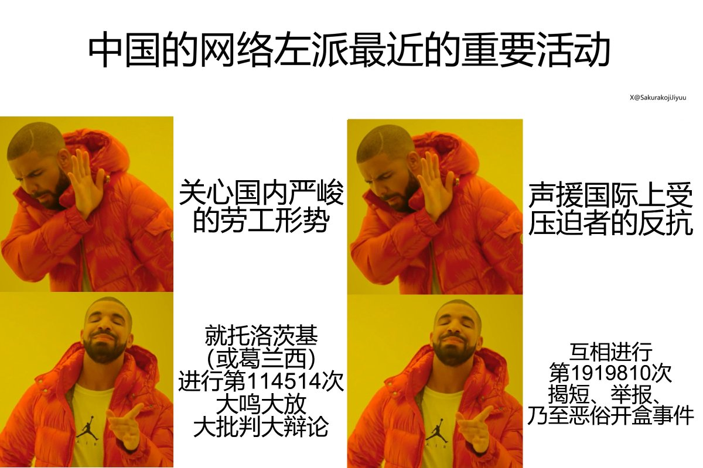

𝐀𝐬𝐡𝐥𝐞𝐲 𝐁𝐥𝐨𝐜𝐤🍥🌹🇹🇼🏳️⚧️🇪🇺
@bolckAshley
RT @SakurakojiJiyuu: 中国的网络左派最近的重要活动
关心国内严峻的劳工形势（×）
声援国际上受压迫者的反抗（×）
就托洛茨基（或葛兰西）进行第114514次大鸣大放大批判大辩论（✓）
互相进行第1919810次揭短、举报、乃至恶俗开盒事件（✓） https:…

社革党人狸希特8964 VladimirRikkiter - PSRer
@SakurakojiJiyuu
中国的网络左派最近的重要活动
关心国内严峻的劳工形势（×）
声援国际上受压迫者的反抗（×）
就托洛茨基（或葛兰西）进行第114514次大鸣大放大批判大辩论（✓）
互相进行第1919810次揭短、举报、乃至恶俗开盒事件（✓） https://t.co/QFPj6BYxcJ